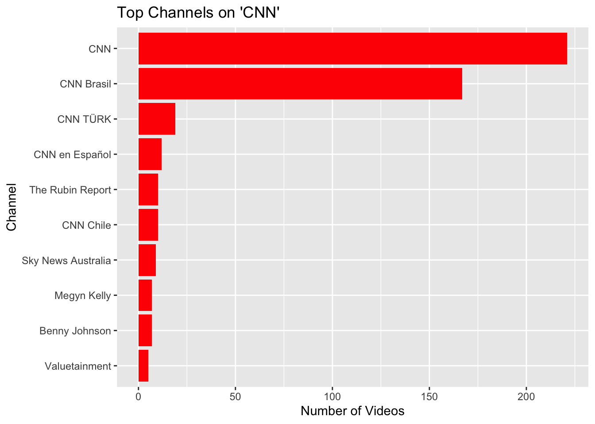

## Collecting Social Media data: YouTube
# Required Libraries
# Install if necessary
#install.packages("tuber")
#install.packages("tidyverse")
#install.packages("lubridate")
#install.packages("stringi")
#install.packages("wordcloud")
#install.packages("gridExtra")
#install.packages("httr")
#install.packages("tm")
library(tuber)
library(tidyverse)── Attaching core tidyverse packages ──────────────────────── tidyverse 2.0.0 ──
✔ dplyr 1.1.4 ✔ readr 2.1.5
✔ forcats 1.0.0 ✔ stringr 1.5.1
✔ ggplot2 3.5.1 ✔ tibble 3.2.1
✔ lubridate 1.9.3 ✔ tidyr 1.3.1
✔ purrr 1.0.2
── Conflicts ────────────────────────────────────────── tidyverse_conflicts() ──
✖ dplyr::filter() masks stats::filter()
✖ dplyr::lag() masks stats::lag()
ℹ Use the conflicted package (<http://conflicted.r-lib.org/>) to force all conflicts to become errorslibrary(lubridate)
library(stringi)
library(wordcloud)Loading required package: RColorBrewerlibrary(gridExtra)
Attaching package: 'gridExtra'
The following object is masked from 'package:dplyr':
combinelibrary(httr)
library(tm)Loading required package: NLP
Attaching package: 'NLP'
The following object is masked from 'package:httr':
content
The following object is masked from 'package:ggplot2':
annotate### Step 1: Apply for the Google YouTube API
### 1. Go to Google Cloud Console (https://cloud.google.com/).
### 2. Create a new project or select an existing one.
### 3. Search for and enable the YouTube Data API v3.
### 4. Go to Credentials > Create Credentials > OAuth Client ID.
### 5. Set up the OAuth consent screen
### 6. Name the App (e.g. YouTube analyzer), enter support email
### 7. Application type: web application
### 8. Name: Web client 1
### 9. Generate Client ID and Client Secret.
### Step 2: Authenticate with YouTube API
#### Use your Client ID and Client Secret to authenticate.
# Replace with your actual Client ID and Client Secret
yt_oauth("645739575442-j8oucmudgt0hmlf61pk4j46k0pe6gkhb.apps.googleusercontent.com", "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", token = "")
### Important: when running for first time, you will be prompted to:
### 1. add the .httr-oauth to .gitignore, select 1 to consent.
### 2. Then it will open browser to choose your Google account.
### 3. When prompted with safety statement ("Google hasn’t verified this app"), click advanced and click Go to Appname (unsafe) to verify.
### 4. When done, the message will show "Authentication complete. Please close this page and return to R."
### 5. Return to RStudio. When seeing:
###
### "Waiting for authentication in browser...
### Press Esc/Ctrl + C to abort
### Authentication complete.
###
### It is ready to collect YouTube data
### Step 3: Download YouTube Data
#### Here’s an example of collecting data on the “US election 2024.”
#### Search for videos related to "US election 2024"
yt_CNN <- yt_search(term = "CNN")
#### Display the first few rows
head(yt_CNN) video_id publishedAt channelId
1 YNH2L5uKt8M 2024-11-30T00:14:41Z UCupvZG-5ko_eiXAupbDfxWw
2 hMKA7MRqDnc 2024-12-04T02:00:24Z UCupvZG-5ko_eiXAupbDfxWw
3 jF8BGvXJ_Ps 2024-11-29T18:11:55Z UCupvZG-5ko_eiXAupbDfxWw
4 1b5zKsrUW0M 2024-12-04T03:20:00Z UCupvZG-5ko_eiXAupbDfxWw
5 ecxdbWtLYNE 2024-12-03T20:30:32Z UCupvZG-5ko_eiXAupbDfxWw
6 xtZnqz3djBg 2024-12-04T00:59:05Z UCupvZG-5ko_eiXAupbDfxWw
title
1 Trump having dinner with Trudeau at Mar-a-Lago
2 New video of violent police clashes with anti-Putin protestors
3 Elon Musk and Trump dance to 'Y-M-C-A' at Thanksgiving dinner
4 Republican strategist makes prediction about whether Trump will ‘cut’ Hegseth ‘free’ as his pick
5 Yoon backtracks after plunging South Korea into chaos with martial law order
6 Protestors call for South Korean President Yoon Suk Yeol to step down after historic political chaos
description
1 Canadian Prime Minister Justin Trudeau arrived in West Palm Beach, Florida to have dinner with President-elect Donald Trump at ...
2 CNN's Matthew Chance reports on six days of clashes between anti-Putin protesters and police in Georgia following the ...
3 Tesla CEO Elon Musk celebrated Thanksgiving with President-elect Donald Trump and his family at Mar-A-Lago. Musk was ...
4 As one of President-elect Donald Trump's cabinet picks appears to have an uphill battle in a confirmation hearing, Pete Hegseth, ...
5 CNN's Mike Valerio reports from Seoul after South Korean President Yoon Suk Yeol said he will lift his martial law order following ...
6 South Korean President Yoon Suk Yeol lifted a martial law order, just hours after his decree plunged the country into political ...
thumbnails.default.url thumbnails.default.width
1 https://i.ytimg.com/vi/YNH2L5uKt8M/default.jpg 120
2 https://i.ytimg.com/vi/hMKA7MRqDnc/default.jpg 120
3 https://i.ytimg.com/vi/jF8BGvXJ_Ps/default.jpg 120
4 https://i.ytimg.com/vi/1b5zKsrUW0M/default.jpg 120
5 https://i.ytimg.com/vi/ecxdbWtLYNE/default.jpg 120
6 https://i.ytimg.com/vi/xtZnqz3djBg/default.jpg 120
thumbnails.default.height thumbnails.medium.url
1 90 https://i.ytimg.com/vi/YNH2L5uKt8M/mqdefault.jpg
2 90 https://i.ytimg.com/vi/hMKA7MRqDnc/mqdefault.jpg
3 90 https://i.ytimg.com/vi/jF8BGvXJ_Ps/mqdefault.jpg
4 90 https://i.ytimg.com/vi/1b5zKsrUW0M/mqdefault.jpg
5 90 https://i.ytimg.com/vi/ecxdbWtLYNE/mqdefault.jpg
6 90 https://i.ytimg.com/vi/xtZnqz3djBg/mqdefault.jpg
thumbnails.medium.width thumbnails.medium.height
1 320 180
2 320 180
3 320 180
4 320 180
5 320 180
6 320 180
thumbnails.high.url thumbnails.high.width
1 https://i.ytimg.com/vi/YNH2L5uKt8M/hqdefault.jpg 480
2 https://i.ytimg.com/vi/hMKA7MRqDnc/hqdefault.jpg 480
3 https://i.ytimg.com/vi/jF8BGvXJ_Ps/hqdefault.jpg 480
4 https://i.ytimg.com/vi/1b5zKsrUW0M/hqdefault.jpg 480
5 https://i.ytimg.com/vi/ecxdbWtLYNE/hqdefault.jpg 480
6 https://i.ytimg.com/vi/xtZnqz3djBg/hqdefault.jpg 480
thumbnails.high.height channelTitle liveBroadcastContent publishTime
1 360 CNN none 2024-11-30T00:14:41Z
2 360 CNN none 2024-12-04T02:00:24Z
3 360 CNN none 2024-11-29T18:11:55Z
4 360 CNN none 2024-12-04T03:20:00Z
5 360 CNN none 2024-12-03T20:30:32Z
6 360 CNN none 2024-12-04T00:59:05Z### Step 4: Basic Analytics on YouTube Data
#### Most Frequent Words in Video Titles
# Extract titles and clean up
# Extract titles and clean up
titles <- yt_CNN$title
titles_clean <- tolower(titles) %>%
stri_replace_all_regex("[[:punct:]]", "") %>%
str_split(" ") %>%
unlist()
# Create a word frequency table
word_freq <- table(titles_clean)
word_freq_df <- as.data.frame(word_freq, stringsAsFactors = FALSE)
colnames(word_freq_df) <- c("word", "freq")
# Filter common words (stop words) and plot a word cloud
word_freq_df <- word_freq_df %>% filter(!word %in% tm::stopwords("en"))
set.seed(123)
wordcloud(words = word_freq_df$word, freq = word_freq_df$freq, max.words = 50)### 4.2. Plot Video Publish Dates
# Format publish dates and aggregate data
yt_sm <- yt_CNN %>%
mutate(publish_date = as.Date(publishedAt)) %>%
count(publish_date)
# Plot the frequency of videos published over time
ggplot(yt_sm, aes(x = publish_date, y = n)) +
geom_line(color = "blue") +
labs(title = "Videos Published Over Time", x = "Date", y = "Number of Videos") +
theme_bw()### 4.3. Top Channels by Video Count
# Summarize by channel
top_channels <- yt_CNN %>%
count(channelTitle, sort = TRUE) %>%
top_n(10)Selecting by n# Plot top channels
ggplot(top_channels, aes(x = reorder(channelTitle, n), y = n)) +
geom_bar(stat = "identity", fill = "red") +
coord_flip() +
labs(title = "Top Channels on 'CNN'", x = "Channel", y = "Number of Videos")